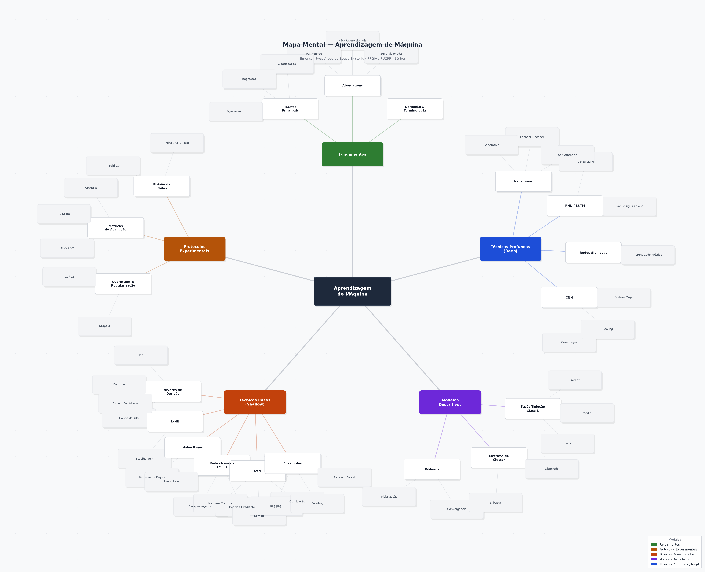

Fundamentos & Terminologia
Protocolos Experimentais
Técnicas Rasas (Shallow)
Modelos Descritivos
Técnicas Profundas (Deep)
Estrutura visual completa de todos os tópicos da ementa, organizada em 5 módulos por nível de complexidade e tipo de abordagem.
